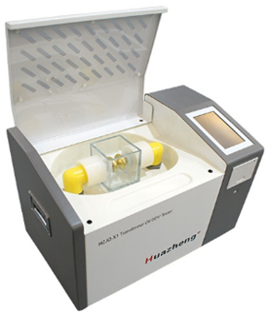

Medidor de rigidez dielectrica del aceite (Espinterometro)
La falta de mantenimiento genera fallas en el transformador
Muchas de las fallas más comunes en los transformadores se deben a una falta de mantenimiento en el aceite, lo que genera una perdida de propiedades en el mismo, por ello realizar una prueba de rigidez dieléctrica del aceite del transformador eléctrico es esencial.
El aceite ailslante
Este liquido como todo material de aislamiento se degrada con el pasar del tiempo. Si además de ello se expone a condiciones extremas de operación, podría sufrir una degradación acelerada, perdiendo sus propiedades eléctricas.
La humedad es una de las causas principales, reduce notablemente las propiedades de los aceites. Es por ello que la preservación de estos toma una vital importancia.
Para poder medir la degradación de las propiedades eléctricas del aceite se tienen, entre otras pruebas, la de medición de la rígidez dieléctrica.
Esta prueba, también conocida como tensión de ruptura eléctrica del aceite, permite medir la capacidad que tiene este líquido aislante para soportar un esfuerzo eléctrico sin producir un arco.
Prueba de rigidez dieléctrica del aceite
Esta prueba es una de las 6 pruebas rutinarias que se realiza a los transformadores y es la que más se debe de realizar a lo largo de su vida.
Esta prueba permite conocer la potencia máxima y media en la que este aceite puede serguir operando con normalidad, si se observa una dismunución de estos valores a los que normalmente funciona el transformador, puede existir una cotaminación del liquido ya sea por agua, polvo u otra particula extraña que impide el cumplimiento de sus funciones de aislante.
Para realizarla la prueba de rigidez dieléctrica del aceite del transformador eléctrico es necesario obtener las muestras de aceite del equipo que se desea evaluar.
La tensión de ruptura dieléctrica proporciona información sobre el grado de resistencia que tiene el aceite para soportar esfuerzo dieléctrico, representa la tensión a la cual ocurre un arco eléctrico entre dos electrodos bajo condiciones de prueba.
El valor de tensión de ruptura depende de los agentes contaminantes, tales como: agua, oxigeno, suciedad, fibras, partículas conductoras (carbón, metal, óxidos metálicos, etc.)
Los electrodos manejados son los especificados en las normas ASTM-D877, ASTM-D1816, IEC-60156, BS-148, VDE-0370 y otras normas aplicables.
De la muestra del mismo aceite obtenido se considera como el promedio de los 5 rompimientos.